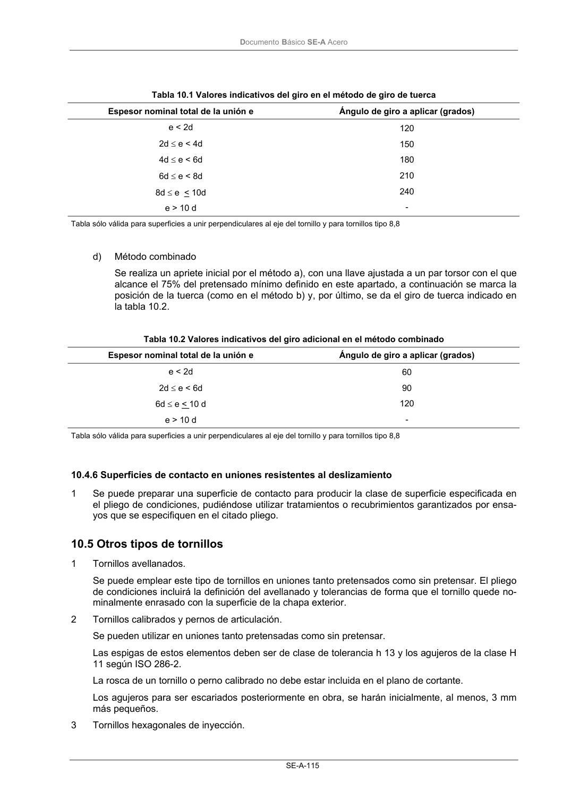

DB-SE-A Acero · edición 2007-10-23 · capa oficial
Documento DB-SE-A-oficial · SHA-256 del PDF 9ed9ea694aabfbda3bfbbef40dfe9223fde05d13c35bc2ba9751e5a96a22a64f
Página física 117 de 168.
Copia fiel del PDF fuente · Fuente oficial
Ficha de la disposición en la fuente oficial
Formato: Texto de la página (Markdown)
Documento Básico SE-A Acero SE-A-115 Tabla 10.1 Valores indicativos del giro en el método de giro de tuerca Espesor nominal total de la unión e Ángulo de giro a aplicar (grados) e < 2d 2d ≤ e < 4d 4d ≤ e < 6d 6d ≤ e < 8d 8d ≤ e < 10d e > 10 d 120 150 180 210 240 - Tabla sólo válida para superficies a unir perpendiculares al eje del tornillo y para tornillos tipo 8,8 d) Método combinado Se realiza un apriete inicial por el método a), con una llave ajustada a un par torsor con el que alcance el 75% del pretensado mínimo definido en este apartado, a continuación se marca la posición de la tuerca (como en el método b) y, por último, se da el giro de tuerca indicado en la tabla 10.2. Tabla 10.2 Valores indicativos del giro adicional en el método combinado Espesor nominal total de la unión e Ángulo de giro a aplicar (grados) e < 2d 2d ≤ e < 6d 6d ≤ e < 10 d e > 10 d 60 90 120 - Tabla sólo válida para superficies a unir perpendiculares al eje del tornillo y para tornillos tipo 8,8 10.4.6 Superficies de contacto en uniones resistentes al deslizamiento 1 Se puede preparar una superficie de contacto para producir la clase de superficie especificada en el pliego de condiciones, pudiéndose utilizar tratamientos o recubrimientos garantizados por ensa- yos que se especifiquen en el citado pliego. 10.5 Otros tipos de tornillos 1 Tornillos avellanados. Se puede emplear este tipo de tornillos en uniones tanto pretensados como sin pretensar. El pliego de condiciones incluirá la definición del avellanado y tolerancias de forma que el tornillo quede no- minalmente enrasado con la superficie de la chapa exterior. 2 Tornillos calibrados y pernos de articulación. Se pueden utilizar en uniones tanto pretensadas como sin pretensar. Las espigas de estos elementos deben ser de clase de tolerancia h 13 y los agujeros de la clase H 11 según ISO 286-2. La rosca de un tornillo o perno calibrado no debe estar incluida en el plano de cortante. Los agujeros para ser escariados posteriormente en obra, se harán inicialmente, al menos, 3 mm más pequeños. 3 Tornillos hexagonales de inyección.
